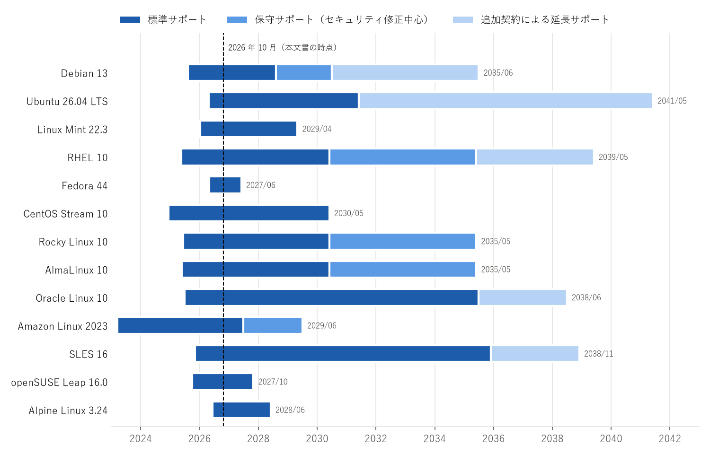

5. 比較
本章では、主要ディストリビューションで紹介したディストリビューションを、基本属性、サポート期間、パッケージ管理コマンド、システム管理の観点で比較する。
5.1. 基本属性
主要ディストリビューションの基本属性を表 5.1 に示す。
名称 |
系統 |
パッケージ形式・管理ツール |
リリースモデル |
サポート期間 |
init |
libc |
開発元による商用サポート |
|---|---|---|---|---|---|---|---|
Debian |
Debian 系 |
deb / APT |
固定（約 2 年ごと） |
約 5 年（LTS を含む） |
systemd |
glibc |
なし |
Ubuntu LTS |
Debian 系 |
deb / APT、Snap |
固定（LTS は 2 年ごと） |
5 年（Ubuntu Pro で最長 10 年、Legacy アドオンで最長 15 年） |
systemd |
glibc |
あり |
Linux Mint |
Debian 系 |
deb / APT |
固定（Ubuntu LTS に追従） |
Ubuntu LTS と同じ |
systemd |
glibc |
なし |
RHEL |
Red Hat 系 |
RPM / DNF |
固定（メジャーは約 3 年ごと） |
10 年（追加契約で延長可） |
systemd |
glibc |
あり |
Fedora |
Red Hat 系 |
RPM / DNF |
固定（約 6 か月ごと） |
約 13 か月 |
systemd |
glibc |
なし |
CentOS Stream |
Red Hat 系 |
RPM / DNF |
継続的に更新 |
約 5 年 |
systemd |
glibc |
なし |
Rocky Linux、AlmaLinux |
Red Hat 系 |
RPM / DNF |
固定（RHEL に追従） |
10 年 |
systemd |
glibc |
なし（第三者が提供） |
SLES |
SUSE 系 |
RPM / zypper |
固定（マイナーは毎年） |
約 10 年（追加契約で延長可） |
systemd |
glibc |
あり |
openSUSE Leap |
SUSE 系 |
RPM / zypper |
固定 |
約 2 年 |
systemd |
glibc |
なし |
openSUSE Tumbleweed |
SUSE 系 |
RPM / zypper |
ローリング |
最新の状態のみ |
systemd |
glibc |
なし |
Arch Linux |
独立系 |
pkg.tar.zst / pacman |
ローリング |
最新の状態のみ |
systemd |
glibc |
なし |
Gentoo |
独立系 |
ebuild / Portage |
ローリング |
最新の状態のみ |
OpenRC（systemd も可） |
glibc（musl も可） |
なし |
Slackware |
独立系 |
txz / pkgtools |
不定期の固定 |
明示なし |
sysvinit（BSD 風の init スクリプト） |
glibc |
なし |
Alpine Linux |
独立系 |
apk / apk |
固定（約 6 か月ごと） |
約 2 年 |
OpenRC |
musl |
なし |
5.2. サポート期間
主要ディストリビューションの現行版のサポート期間を図 5.1 に示す。各段階の終了時期は主要ディストリビューションの各節に記載した。


図 5.1 主要ディストリビューションの現行版のサポート期間（2026 年 10 月時点）
図中の「標準サポート」は不具合修正とセキュリティ修正が提供される期間、「保守サポート」はセキュリティ修正など重要な修正に限って提供される期間、「追加契約による延長サポート」は有償の契約により提供される期間を表す。なお、RHEL、SLES、Oracle Linux の技術サポートには、標準サポートの期間であっても契約が必要である。
サポート期間に関して、次の点に注意する。
ディストリビューションによって、サポート期間の数え方が異なる。RHEL や SLES はメジャーバージョン全体のサポート期間を定めているが、マイナーバージョンごとの更新の提供期間は短い。通常は、最新のマイナーバージョンに更新しながら使う。
Rocky Linux と AlmaLinux のサポート期間は、RHEL の Full Support と Maintenance Support に対応している。
Fedora、openSUSE Leap、Alpine Linux はサポート期間が短いため、定期的なメジャーバージョンの更新が前提となる。
5.3. パッケージ管理コマンド
主なパッケージ管理ツールのコマンドの対応を表 5.2 に示す。管理者権限が必要な操作は、sudo を付けるか root で実行する。
操作 |
APT（Debian 系） |
DNF（Red Hat 系） |
zypper（SUSE 系） |
pacman（Arch Linux） |
apk（Alpine Linux） |
|---|---|---|---|---|---|
パッケージ情報の更新 |
|
|
|
|
|
システム全体の更新 |
|
|
|
|
|
パッケージの導入 |
|
|
|
|
|
パッケージの削除 |
|
|
|
|
|
パッケージの検索 |
|
|
|
|
|
パッケージの詳細表示 |
|
|
|
|
|
導入済みパッケージの一覧 |
|
|
|
|
|
ファイルを含むパッケージの特定 |
|
|
|
|
|
DNF は、パッケージの導入や更新の際にパッケージ情報を必要に応じて自動で更新するため、dnf makecache を明示的に実行する必要は少ない。openSUSE Tumbleweed では、システム全体の更新に zypper update ではなく zypper dist-upgrade（短縮形は zypper dup）を使う。
例として、Web サーバの nginx を導入する手順をリスト 5.1 からリスト 5.5 に示す。
1$ sudo apt update
2$ sudo apt install nginx
1$ sudo dnf install nginx
1$ sudo zypper install nginx
1$ sudo pacman -Syu nginx
1# apk update
2# apk add nginx
Alpine Linux は標準では sudo を含まないため、リスト 5.5 は root で実行する例としている。
5.4. システム管理の違い
パッケージ管理以外にも、標準で採用しているセキュリティ機構やネットワーク設定の方式はディストリビューションによって異なる。主な違いを表 5.3 に示す。
ディストリビューション |
強制アクセス制御 |
ファイアウォールの管理 |
ネットワーク設定 |
|---|---|---|---|
Debian |
AppArmor |
nftables を直接設定（ufw、firewalld も導入可能） |
ifupdown（/etc/network/interfaces）、デスクトップでは NetworkManager |
Ubuntu |
AppArmor |
ufw（導入済みだが標準では無効） |
Netplan（YAML で記述し、systemd-networkd または NetworkManager に設定を渡す） |
RHEL 系 |
SELinux（標準で有効） |
firewalld |
NetworkManager（nmcli で操作） |
SLES 16、openSUSE Leap 16.0 |
SELinux |
firewalld |
NetworkManager |
SLES 15 |
AppArmor |
firewalld |
wicked |
Arch Linux |
なし（利用者が選択） |
なし（利用者が選択） |
利用者が選択（systemd-networkd、NetworkManager など） |
Alpine Linux |
なし |
なし（利用者が選択） |
ifupdown-ng（/etc/network/interfaces） |
強制アクセス制御（SELinux、AppArmor）は、ファイルのパーミッションとは別に、プロセスがアクセスできる資源を制限する仕組みである。異なる系統のディストリビューションへ移行する場合、権限の問題がこの仕組みに起因することがあるため、移行先の方式を把握しておく必要がある。
5.5. ディストリビューションの識別
現在の Linux ディストリビューションの多くは、ディストリビューションの情報を /etc/os-release（または /usr/lib/os-release）に記載している。このファイルは systemd プロジェクトが仕様を定めたもので、シェルの変数代入と同じ形式で記述される。Ubuntu 26.04 LTS での内容の例をリスト 5.6 に示す。
1PRETTY_NAME="Ubuntu 26.04 LTS"
2NAME="Ubuntu"
3VERSION_ID="26.04"
4VERSION="26.04 LTS (Resolute Raccoon)"
5VERSION_CODENAME=resolute
6ID=ubuntu
7ID_LIKE=debian
ID はディストリビューションの識別子、ID_LIKE は互換性のある、または基になったディストリビューションの識別子である。例えば Rocky Linux の ID_LIKE には rhel が含まれる。スクリプトでディストリビューションごとに処理を分ける場合、ID だけでなく ID_LIKE も参照すると、派生ディストリビューションにも対応しやすい。
/etc/os-release を読み取り、ディストリビューションの系統を判定する Python のサンプルコードをリスト 5.7 に示す。このファイルは os_release.py からダウンロードできる。
1"""/etc/os-release を読み取り、ディストリビューションの名称・バージョン・系統を表示する。
2
3使い方::
4
5 python os_release.py # /etc/os-release（なければ /usr/lib/os-release）を読む
6 python os_release.py path/to/file # 指定したファイルを読む
7"""
8
9from __future__ import annotations
10
11import shlex
12import sys
13from pathlib import Path
14
15# os-release の標準の配置場所（先頭から順に探す）
16DEFAULT_PATHS = (Path("/etc/os-release"), Path("/usr/lib/os-release"))
17
18# ID / ID_LIKE の値と系統の対応
19FAMILIES = {
20 "debian": "Debian 系",
21 "ubuntu": "Debian 系",
22 "rhel": "Red Hat 系",
23 "fedora": "Red Hat 系",
24 "centos": "Red Hat 系",
25 "suse": "SUSE 系",
26 "opensuse": "SUSE 系",
27 "arch": "Arch Linux 系",
28 "gentoo": "Gentoo 系",
29 "slackware": "Slackware 系",
30 "alpine": "Alpine Linux 系",
31}
32
33
34def parse_os_release(text: str) -> dict[str, str]:
35 """os-release 形式の文字列を解析し、キーと値の辞書を返す。
36
37 各行は ``KEY=VALUE`` の形式で、値はシェルと同じ規則で引用符に囲まれることがある。
38 空行と ``#`` で始まる行は無視する。
39 """
40 result: dict[str, str] = {}
41 for line in text.splitlines():
42 line = line.strip()
43 if not line or line.startswith("#") or "=" not in line:
44 continue
45 key, value = line.split("=", 1)
46 # 引用符とエスケープはシェルの規則で解釈する
47 words = shlex.split(value)
48 result[key] = words[0] if words else ""
49 return result
50
51
52def detect_family(info: dict[str, str]) -> str:
53 """ID と ID_LIKE から系統を判定する。判定できなければ「不明」を返す。"""
54 candidates = [info.get("ID", "")] + info.get("ID_LIKE", "").split()
55 for candidate in candidates:
56 if candidate in FAMILIES:
57 return FAMILIES[candidate]
58 return "不明"
59
60
61def find_os_release() -> Path | None:
62 """os-release ファイルを標準の配置場所から探す。"""
63 for path in DEFAULT_PATHS:
64 if path.is_file():
65 return path
66 return None
67
68
69def main(argv: list[str]) -> int:
70 path = Path(argv[1]) if len(argv) > 1 else find_os_release()
71 if path is None or not path.is_file():
72 print("os-release ファイルが見つかりません。", file=sys.stderr)
73 return 1
74
75 info = parse_os_release(path.read_text(encoding="utf-8"))
76 print(f"名称 : {info.get('NAME', '不明')}")
77 print(f"バージョン: {info.get('VERSION', info.get('VERSION_ID', '不明'))}")
78 print(f"ID : {info.get('ID', '不明')}")
79 print(f"ID_LIKE : {info.get('ID_LIKE', '（なし）')}")
80 print(f"系統 : {detect_family(info)}")
81 return 0
82
83
84if __name__ == "__main__":
85 sys.exit(main(sys.argv))
実行には Python 3.9 以降が必要である。引数を省略すると /etc/os-release を読み取り、引数にファイルのパスを指定するとそのファイルを読み取る。Rocky Linux 10.2 で実行した場合の出力の例をリスト 5.8 に示す。
1名称 : Rocky Linux
2バージョン: 10.2 (Red Quartz)
3ID : rocky
4ID_LIKE : rhel centos fedora
5系統 : Red Hat 系
なお、Python 3.10 以降では標準ライブラリの platform.freedesktop_os_release() でも同じファイルを解析できる。